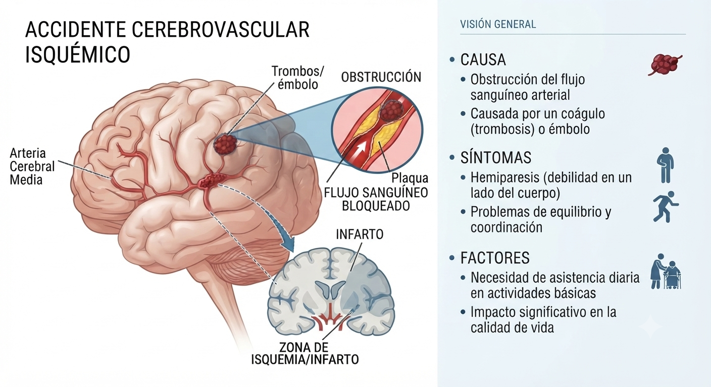

Caso Clínico: Accidente Cerebrovascular Isquémico
Análisis de caso: Alejandra, 54 años
TIPOS DE ACV

Haz clic en las flechas para ver otros tipos
Historia Clínica
Alejandra, de 54 años, sufrió un ACV Isquémico hace cuatro meses. Requiere ayuda parcial para actividades de la vida diaria.
Consecuencias Clínicas
- Hemiparesia izquierda (debilidad brazo y pierna).
- Alteraciones del equilibrio y lentitud motora.